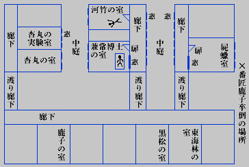

一、堕天女記
湯の町Ｋと、汀から十丁の沖合にある鵯島との間に、半ば朽ちた、粗末な木橋が蜿蜒と架っている。そして、土地ではその橋の名を、詩人青秋氏の称呼が始まりで、嘆きの橋と呼んでいるのだ。
その名はいうまでもなく、鵯島には、兼常龍陽博士が私費を投じた、天女園癩療養所があるので、橋を渡る人達といえば、悉くが憂愁に鎖された、廃疾者かその家族に限られていたからであった。
所が三月十四日のこと、前夜の濃霧の名残りで、まだ焼色の靄が上空を漂うている正午頃に、その橋を、実に憂欝な顔をして法水麟太郎が渡っていた。せめて四、五日もの静養と思い、切角無理を重ね作った休暇ではあったが、その折も折、構内に於いて失楽園と呼ぶ、研究所に奇怪な殺人事件が起ったのであるから、対岸に友人法水の滞在を知る以上、副院長の真積博士がどうして彼を逸することが出来たであろうか。
また、一方の法水も、外面では渋りながらも、内心では沸然と好奇心が湧き立っていたというのは、兼々から、院長兼常博士の不思議な性行と、失楽園に纏わる、様々な風説を伝え聞いていたからであった。
扨、真積博士に会った劈頭から、法水に失楽園の秘密っぽい空気が触れて来た。真積氏は、まず自分より適任であろうといって、失楽園専任の助手杏丸医学士を電話で招き、そうした後に、こんな意外な言葉を口にしたのである。
「僕が坐魚礁（失楽園の所在地）に、一度も足を踏み込んだ事がないといったら、君はさだめし不審に思うだろう。けれども、それが微塵も偽りのない実相なので、事実河竹に杏丸という二人の助手以外には、この私でさえも入ることを許されていなかったのだ。つまりあの一廓は、院長が作った絶対不侵の秘密境だったのだよ」
「所で、殺されたのは？」
「助手の河竹医学士だ。これは明白な他殺だそうだが、妙なことには、同時に院長も異様な急死を遂げている。とにかく、斯んな田舎警察にも、万代不朽の調書を残してやってくれ給え」
その時、三十恰好のずんぐりした男が入って来ると、真積氏は、その男を杏丸医学士といって紹介した。
杏丸は、まるで浮腫でもあるような、泥色の黄ばんだ皮膚をしていて、見るからに沈欝な人相だった。然し法水は、まず現場検証以前に、失楽園の本体と三人の不思議な生活を杏丸の口から聴くことが出来た。
「院長が、坐魚礁の上に失楽園の建物を建設してから、今月で恰度満三年になりますが、その間完全屍蝋の研究が秘密に行われておりました。つまり、防腐法と皮鞣法、それからマルピギ氏粘液網保存法とが、主要な研究項目だったのですよ。そして、その間私と河竹は、高給を餌にされて、失楽園内部の出来事について、一切口外を禁ぜられておりました。で、この一月に完成された研究はともかくとして、ここに何より先にいわなければならない事があります。というのは、過去三年を通じて、失楽園にもう一人、秘密の居住者があったという事なんです」
と杏丸は懐中から、罫紙の綴りに、「番匠幹枝狂中手記」と、題した一冊を取り出した。
「とにかく、院長が書いたこの序文を読めば、院長という人物がどんなに悪魔的な存在だったかまた、病苦に歪められたその耽美思想が、どういう凄惨な形となって現われたかは、詳しくお判りになりましょう。そして、これが完全屍蝋の研究以外に、失楽園で過された生活の全部だったのです」
宝相華と花喰鳥の図模様で飾られた表紙を開くと、法水の眼は忽ち冒頭の一章に吸い付けられて行った。
――××六年九月四日、余は岩礁の間より、左眼失明せる二十六、七歳の美わしき漂流婦人を救えり。所持品により、本籍並びに番匠幹枝という姓名だけは知りたれども、同人は精神激動のためか、殆んど言語を洩らさず、凡てが憂欝狂の徴候を示せり。されど、時偶発する言葉により、同人が小机在の僧侶の妻にして、夫の嫉妬のために左眼を傷つけられ、それが引いては、入水の因をなせしこと明らかとなれり。そのうち、余の心は次第に幹枝に惹かれ行き、やがて狂女と同棲生活に入りしこそ浅ましけれ。
――されど、余には一つの計画あり、まず、その階梯を踏まんがため、眼科出の杏丸に命じて、幹枝の左眼に義眼手術を施せり。しかして、その手術中彼を強要して、生ける螺旋菌（黴毒菌）を眼窩後壁より頭蓋腔中に注入せしめたるなり。実に、大脳を蝕んで、初期に螺旋菌が作り出すものは、現実を超えたる架空の世界ならずや。即ち余は、幹枝に痲痺狂を発せしめて、それ特有の擬神妄想を聴かんと企てたるものなりき。果して、幹枝の高き教養と脱俗の境地に過せし素質は忽ちに自身を天人に擬して、兜羅綿の樹下衆車苑に遊ぶの様を唱い始めたり。その聴き去るに難き美しさは、この一書を綴るの労を厭わぬほどにして、正に宝積経や源信僧都の往生要集の如きは、到底比すべくも非ずと思いたりき。
――然るに、その最中余を驚かせたるものありて、幹枝の懐妊を知れり。早速沼津在の農家に送りて分娩を終らしめ、再び本園に連れ帰りしは、本年の一月なりき。されど、その間において幹枝の心身には、果して期せるが如く痛ましき変化を来たせり。即ち、螺旋菌の脊髄中に入りしためにして、運動に失調起り下腹部に激烈なる疼痛現われて、幹枝の幻想も苦痛に伴う悲哀の表現に充ち、華鬘萎み羽衣穢れ――とかいう、天人衰焉の様を唱うようになれり。かくなりては、一路植物性の存在に退化するのみにして、治療の途はあれども、余には既に幹枝の必要なきことなれば、余す手段は安死術のみなりというべし。
――されど、自然は余の触手をまたず、幹枝に大腹水症を発せしめたり。六尺余りに肥大せる腹を抱えて、全身は枯痩し、宛然草紙にある餓鬼の姿よりなき幹枝を見れば、ありし日の俤何処ぞやと嘆ずるのほかなく、転変の鉄鎖の冷たさは、夢幻まさに泡影の如しというべし。
――ここにおいて、三月六日切開手術を行い、腹水中に浮游せる膜嚢数十個を取り出せしも、予後の衰弱のため、その日永眠せり。斯くの如く、余は幹枝に天女の一生を描かせ、一年有余の陶酔を貪りたるものなれば、その終焉の様を記憶すべく、坐魚礁研究所を失楽園とは名付けたるものなり――
法水が読み終るのを待って、杏丸医学士は続けた。
「然し、研究の完成と同時に、幹枝以外に二つの屍体を、手に入れることが出来ました。二人とも療養所の入院患者で、一人は黒松重五郎という五十男で稀しい松果状結節癩。もう一人は、これがアディソン病という奇病で、副腎の変化から皮膚が鮮かな青銅色になるものでしたが、この方は東海林徹三という若い男でした。ですから、現在では三つの屍体が、完全な死蝋に作られていて、それに、院長が繧繝彩色と呼んでいる、奇怪な粉飾が施されているのです。幹枝は膨んだ腹をそのままに作り、他の二人には冥界の獄卒が着る衣裳を纏わせて、いわゆる六道図絵の多面像を作り上げたのでした」
とそういってから、杏丸の眼にチカッと嗤うような光が現われた。
「所が、法規上屍体保存の許可と取引代価を、遺族の者に交渉することになりますと、偶然三人の代表が島へ渡って来ました。それが、一昨々日、つまり十一日の事だったのです」
「すると、まだ滞在しているのですね」
「そうです。ですから、この事件は簡単に
3-2=1とはいえないのですよ。勿論交渉も易々とは運びませんでした。大体が、屍体の閲覧を拒絶した、院長の措置から発したのでしょうが、黒松の弟も東海林の父親も、代価に不服をいい出しましたし、殊に、幹枝の姉で鹿子といって、前身がＵ図書館員だという救世軍の女士官は、この手記を見ると、途方もない条件をいい出したのです。それが金銭ではなく、失楽園の一員に加えてくれというのだから、妙じゃありませんか」
「成程、失楽園の一員に……」
法水も怪訝そうに眉間を狭めると、
「多分、これを見たのでしょう」
といって、杏丸は最後のページを開いた。
その日付は手術の当日で、幹枝永眠す――と書いた次に、一枚の鋤の女王が貼り付けられ、その骨牌の右肩に、「コスター初版聖書秘蔵場所」とまた、人物模様の上には「Mor-rand 足」と書かれてあった。
「モルランド足というのは、たしか八本指の、いわゆる過贅畸形だったね。だが、これは暗号なのかな」
法水が小首を傾けながら訊ねると、真積博士は頷いたが、その下から、
「だがコスター初版聖書とは？」と反問した。
「あったら大変だよ。それこそ歴史的な発見なのさ」
法水は頭から信じないように、
「世界最初の活字聖書は、一四五二年版のグーテンベルク本だが、それと同じ年に和蘭ハーレムの人コスターも、印刷器械を発明して、聖書の活字本を作ったという記録が残っているんだ。然し、この方は現在一冊も残っちゃいないけれども、グーテンベルク本は時価六十万ポンドといわれているんだぜ。だから、もしもこれが真実なら、実に驚くべしといわざるを得んじゃないか」
そう云ってから杏丸に、
「所で、事件を発見した顛末を伺いましょう。院長と河竹医学士とどちらが先でしたか」
「院長の方です」
といって、杏丸は、見取図を認めた紙片を取り出し、法水に与えてから、
「院長は相当時期の進んだ結核患者なので、無風の夜には、窓を開放して眠る習慣になって居るのです。ですから、今朝の八時頃でしたか、開いている窓から、異様な姿体が容易く眼に入りました。所が、その旨を河竹へ報せに行くと、室の扉が、押せど叩けど開かないのです。でも一時間余り待ってはみたのですが、何時になっても出て来ないので、止むなくほかの男二人と力を併せて扉を叩き破りました。すると、河竹は背後から、心臓に短剣を刺し通されて、俯向け様に斃されているのです。で、二つの室の情況をいいますと、院長の室は、中庭側の窓が開放されているだけで、扉や他の窓は残らず鍵が掛かっていました。ところが、河竹の方はどうでしょう、全然密閉された室だったのですよ。それから、屍体検案の結果は、河竹はまず論なしとしても、院長の方は、詳細剖見を待つにしろ、まず急性の病死としか思われません。それに、絶命時刻がまた妙なんですよ。院長は、午前二時から三時までの間と思われますが、河竹の方は今朝十時の検視で、絶命後二時間以内という推定しか得られんのです。つまり、吾々が立ち騒いでいる間に、叫声も物音も立てなかった、犯人の陰微な暗躍があった訳ですな」
といってから、杏丸は狡猾な笑いを作って、声を低めた。
「所が法水さん、此処に見逃してはならぬ、出来事があるのです。というのは、院長の死を発見する直前に、屍蝋室の窓下で、番匠鹿子が卒倒しているのを見付けたのでした。勿論すぐ室に抱え込んで気付を与えましたが、その後は顧る暇がないので、十一時ごろになって漸っと見舞ってみました。すると、その時は平常通りケロリとなっていて、何時の間にか寝台から離れて起き上っていたのです」
「すると、河竹の死に対して、鹿子は明白な不在証明を欠いているという訳ですね」
法水は相手の顔にジロリと一瞥を与えて、
「では、現場へ案内して頂きましょう」
二、六道図絵の秘密
失楽園は、鵯島に続く三町四方ほどの、岩礁の上に盛土をして、その上に建てられているのだが、周囲の欝蒼たる樹木が、その全様を覆い隠していた。本島との間には刎橋があって、その操作は、院長と二人の助手以外には、秘密にされているとかいう話である。

中央の平地に上図通りの配列で並んでいるのが、失楽園の全部であって、四棟ともいずれも白塗りの木造平屋で、外観はありきたりの、病棟と少しも異なっていなかった。
法水はまず、周囲の足跡を調べ始めたが、昨夜の濃霧で湿っている、土の上にあるものは発見する際の杏丸のもののみで、結局それからは、何も得るところがなかった。
しかし、兼常博士の室に入り、窓越しに対岸の一棟を見ると、斜かいに見える杏丸の実験室がこれも窓が、開け放たれているのに気がついた。
兼常博士の室の窓は、廊下側の二つは単純な硝子窓で、それには掛金が下りているが、中庭側の三つが開け放されてあった。扉は廊下側の左端に、そして、その側の右隅には寝台があり、その上で兼常博士が、寝衣のまま四肢をややはだけ気味に、仰臥している。
年のころは五十四、五で、ブリアン型の髭さえなければ、余程厳つい顔立であろうが、その半ば口を開いた死相を見ると、ただただ安らかな眠という外にない。
室内には位置の異なった調度類もなく、何処と云い、取り乱された形跡がないばかりか、指紋や犯跡を証明するものも皆無であった。屍体にも外傷は愚か、中毒死らしい徴候さえ、残されていないのである。尚絶命を証明する時刻は、小卓の上に投げた、右手の甲の下で、腕時計の硝子が割れていて、その指針が正二時を指しているだけでも、明らかだった。
「やはり、心臓痲痺ですかな」
屍体を弄っている法水の背後から、杏丸が声をかけた。
「空気栓塞には、猛烈な苦悶が伴いますし、流涎や偏転の形跡もないのですから、脳溢血とも思われませんし……。それに、こんな開放された室内では、有毒瓦斯は用をなさんでしょう」
「そうです。そうあってくれると、実に助かるんですよ」
法水は何故か、反対の見解を匂わせたが、今度は屍体の周囲を調べ始めた。
鍵束は枕の下にそっくりしていて、杏丸の話では、各々の室ごとに鍵の形が異なっているそうであった。が、彼はすぐ寝台から離れて、附近の床上に眼を停めた。
その辺一体に、ひしゃげ乾ばった膀胱みたいなものが、四つ五つ散乱しているのであるが、その一寸程の袋体のものは、杏丸医学士の説明により、俄然注目さるるに至った。
「実は私も不審に思っているのです。これは、幹枝の腹水と一緒に取り出された、膜嚢なんですからね。当時、三十幾つか取り出されて、現在は屍蝋室の硝子盤の中に貯蔵されているのですがなかには膜が、相当強靭なものもあるのですよ」
「なるほど」
と法水も頷いたが、
「全く腹腔内の異物が、こんな所に散乱しているなんて、実に薄気味悪い話です。けれども、そう思うのは、これを犯罪の表徴だとするからですよ。もし、兇器の一部だとしたら……」
「オヤオヤ、他殺説を持ち出されると、前が私の室ですからね。しかし、この膜嚢に有毒瓦斯を詰めたと仮定しても、これだけの距離を投擲する前に、第一この薄い膜が無事ではいないでしょう。そうすると今度は、中庭に足跡がないと、いうことになってしまうのです」
と嗤うような杏丸の顔に、法水は皮肉な微笑を投げた。
「いや、足跡なんぞは要りません。大体この膜嚢は、中庭とは反対の方角から、投げられているのですからね」
膜嚢の一つ一つを指し示して、
「貴方は、此処にある全部を連らねて行くと、その線が、屍体を中心とした、半円なのに気が付きませんか。その放射状に、なんだか意味がありそうですね。そうなると、後の硝子窓には、掛金が下りているのですから、この形が何んとなく、博士に加わった不可解な力を、暗示しているようじゃありませんか。とにかくこの情況は、明白に自然死ではありません。そして、他殺にしろ自殺にしろ、この形に、博士の死の秘密があるのです」
こうして、死因不明のままに博士の室を出ると、その足で、調査を河竹医学士の室に移した。
その室は、同じ棟の中で、間に小室を一つ挟んでいるのだが、窓は凡て鎖され、打ち破った扉だけが開かれていた。室の四辺は、殆んど実験設備が埋めていて、その中央に、寝衣の上にドレッシングガウンを羽織った河竹医学士が、扉の方に足を向け、大の字なりに俯伏している。
そして、その背後には、恰度心臓部に当る辺に、柄も埋まらんばかりに深く、一本の短剣が突き刺さっているのだが、血は創口の周囲に盛り上がっているだけで、附近には血滴一つない。おまけに、室内で眼に止った現象といえば、屍体の足下に椅子が一脚倒れているのみであった。
なお、短剣も河竹の所有品で、犯人が手袋を用いたと見え、柄には指紋が残っていない。こうしてすべての情況が、その即死したらしい有様といい、何もかも博士の室と酷似していて、格闘の形跡は勿論のこと、犯人が跳躍した跡は、何処にも見出されないのである。が、然し、扉の鍵が寝衣の衣袋にある所を見ると、密閉された室に、神変不思議な侵入を行った犯人の技巧には、法水も眩惑に似た感情を抑える事が出来なかったのである。
やがて、屍体から右手の壁にある、鳩時計が鳴き始めると、法水はその側にある、実験用の瓦斯栓までも調べたが、それが最後で、全部の調査を終ったらしく、彼に似げない吐息を吐いて言った。
「こりゃ全く、手の付けようがない。内出血が起って、外部へ流れた血が少ないので、刺された時の位置さえ判らんのですよ」
「然し、二時前後に博士を殺して、それから夜が明けて、八時ごろ河竹を殺すまでに、犯人は一体どこに潜んでいたのでしょうな」
と杏丸が、心持仄めかすようにいったが、法水はその言葉に、不快気な眉を顰めただけで、答えなかった。
そして次に、三人の来島者を訊問することになったが、二人の男は、何れも杏丸と同じく、昨夜は就寝後室を出ず、今朝騒がれて初めて知ったというのみの事で、黒松九七郎という癩患者の弟は屍体買入代価の増額を希望しているのみであったが、東海林泰徳というアディソン病患者の父は、さすが職業が薬剤師だけに、病の性質上死期の早かった点に、濃厚な疑念を抱いているかのような口吻だった。
所が、最後の番匠鹿子になると、胸に手を当てて、思い出に耽るかのような彼女の口から、影も形もない五人目の人物の存在を、明確に指摘している所の、実に不気味な、目撃談が吐かれて行ったのである。
「たった一目妹を見たいと思ったばかりでした。昨夜一時ごろ、あのひどい濃霧の中を、私は屍蝋室の窓下へ参りました。でどうやらこうやら、鎧窓の桟だけを、水平にする事が出来ましたが見えたのは、嚢のようなものが浮いている、硝子盤らしいものだけで、それが擦った、燐寸の火に映っただけで御座います。けれども、その時あの室の中に誰かいるような気配が致しました」
「冗談じゃない。三つの死蝋の他誰がいるものですか。あの室は、院長以外には絶対に開けられんのですよ」
杏丸医学士が険相な声を出すと、鹿子はそれを強くいい返して、
「それでなければ、妹はじめ二人の方が、生きていた事になるのです。実は私、不思議なものを見たのですわ」
と、まざまざ恐怖の色を泛かべて、鹿子は語り始めた。
「その折、何処かで二時を打ちましたが、私は最後に残った、一本の燐寸を擦りました。すると急に硝子盤が、真白な光で明るくなったかと思うと、恰度内部を掻き廻しているかのように、嚢のようなものが浮きつ沈みつ動いて行くのです。それも、ホンの一、二秒の間でしたが、私はハッと思った瞬間、駭きと疲労とで、気を失ってしまったので御座います。断じて、幻覚では御座いません。その真実なことは、是非信じて頂きたいと思いますわ」
驚いた二人は、思わず慄然としたように視線を合わせたが、杏丸は信ぜられないかの如くに呟いた。
「もし、なかの膜嚢が、破れてでもいるのでしたら、腐敗瓦斯の発散で、動くこともあるでしょうがね。然し、その光というのだけは、どうしても判らん。確かに吾々以外の人物が潜んでいるんだ――其奴が屹度犯人なんですよ」
そして、狐の様に刺々しい、鹿子の顔を凝視めるのだった。
こうして、訊問は終了したが、鹿子はコスター聖書に関して、片言さえも洩らさなかったし、一方法水も、鹿子の不在証明を追求しようともしなかったのである。
然し、法水は何事か思い付いたと見えて、杏丸を残して、二時間程この室を留守にしていたがやがて戻って来ると、愈最後の調査を、死蝋室で行うことになった。
死蝋室は、事件の起った一棟の右手にあって、その室だけには、窓に鎧扉が附いていた。その二重扉の内側には、堕天女よ去れ――と許りに下界を指差している、
 利天の主帝釈の硝子画が嵌まっていた。
利天の主帝釈の硝子画が嵌まっていた。そして扉の前に立つと、異様な臭気が流れて来て、その腐敗した卵白のような異臭には、布片で鼻孔を覆わざるを得なかったのである。然し室内には、曽て何人も見なかったであろう所の、幻怪極まりない光景が展開されていた。
それを、陰惨などというよりも、千怪万状の魁奇もここまで来れば、恐怖とか厭悪とかいう、感情などは既に通り越していて、まず一枚の、密飾画然とした神話風景といった方が、適切であるかも知れない。
扉の右手には、朱丹・群青・黄土・緑青等の古代岩絵具の色調が、見事な色素定着法で現わされている、二人の冥界の獄卒が突っ立っていた。
右はアディソン病患者の青銅鬼で、緑青色の単衣を纏い、これはやや悲痛な相貌であるが、左手の赤衣を着た醜怪な結節癩は、その松果形をした瘡蓋が、殆んど鉱物化していて鋳金としか思われず、それが山嶽のように重なり合って眼も口も塞ぎ、おまけに、その雲を突かんばかりの巨人が、金剛力士さながらに怒張した四肢を張って、口を引ん歪め、半ば虚空を睥睨しているのだ。
そして、その二人に挟まって蹲んでいるのが、頭髪を中央から振り分けて、宝髻形に結んでいる、裸体の番匠幹枝だった。肋骨の肉が落ち窪み、四肢が透明な琥珀色に痩せ枯れた白痴の佳人は、直径二尺に余る太鼓腹を抱えて、今にもそれが、ぴくぴく脈打ち出しそうだった。
然し法水は、それに一瞥を呉れたのみで、すぐ死蝋と窓との間にある、卓子の側に歩んで行った。
幹枝の腹から出た腹水と、膜嚢を容れた大きな硝子盤が、その上に載っていて、褐色をした濁った液体の中に、二十余り鼈の卵みたいに、ブヨブヨしたものが浮いていた。そして、異臭も腐敗した腹水から、発していることが判った。
其処で、杏丸を顧みて法水がいった。
「この腐敗瓦斯には、硫化水素の匂いが強いじゃありませんか。硝子盤の下の布も、淡緑色に変色していますぜ。多分犯人は、これから純粋の瓦斯を採取して、それを膜嚢に充したもので、博士を殺した、とでもたしか思わせたかったのでしょう。けれども、生憎硫化水素は、患者の毒気といわれるほどで、到る処に痕跡を残して行くのです。それに、仮令純粋のものでも、昨夜のような、猛烈な濃霧に遇っちゃたまりませんよ。散逸する以前に、何より水蒸気が、吸収してしまいますからね。さてこれから、鹿子の目撃談を解剖しますかな」
と、法水は窓際に立って、暫く中腰になり、硝子盤と睨めっこしていたが、やがて莞爾と微笑んで腰を伸ばした。杏丸医学士は、その様子を訝かしがって、法水と同じ動作を始めたが、この方は、単に不審を増すに過ぎなかった。
「僕には、貴方が得たり顔をした、理由が判りません。疑問はいよいよ深くなる一方じゃありませんか。破れた膜嚢がないのですから、第一浮動した説明が、付かないでしょう。それに、鹿子が見た光というのが、また問題です。それが、ガラス窓越しに中庭の向うから放たれたのだとすると、見た通りガラス盤の後方は、二人の死蝋が着ている、朱丹と緑青色の布とで塞がっているのですから、あの様に真白に見える、気遣いはないのです。いよいよ以って、妖しい光は、ガラス盤の周囲で起ったことになりますよ。犯人は、明白に吾々四人以外の、霧のような人物です。それなのに、どうして貴方は？」
「その理由はほかにあるのですよ」
法水は静かにいった。
「で、こういったら、或は皮肉と考えられるかも知れませんが、鹿子の目撃談が、真実に証明されたからなんです。ねえ杏丸さん、その刻限が、恰度博士の絶命時刻に、符号しているでしょう。ですから、暈とした気体のようなものから、結晶を作ってくれる、媒剤を発見した気持がしたのですよ。つまり、以毒制毒の法則が使えるからです。謎を以って謎を制すのです」
「だが、犯罪の捜査に弁証法は信ぜられませんな」
杏丸は反駁した。
「何より直覚ですよ。貴方は何故鹿子を追求しないのです？」
「ハハハハハ、ところが、鹿子より以上の嫌疑者がいますぜ」
「なに、鹿子以上の？」
杏丸は驚いて叫んだ。
「それが杏丸さん、貴方だとしたらどうしますね」
法水は止めを刺すようにいった。
「先刻、貴方の実験室の棚の中から、こんなものを発見したのです。このくの字なりの木片は、御覧の通り飛去来器（いわゆる『飛んで来い』という玩具）です。そして、それを銜えている、穴のある紙製の球形は何んでしょうかねえ。僕は大体において、この事件が判ったような気がして来ました。サア、貴方がたは本島の方へ行って、しばらく僕を静かに考えさせて下さい」
三、コスター聖書を曝く
真積博士をはじめ関係者一同が、片唾をのんでいる席上へ、法水が現われたのは、日没を過ぎて間もなくの事だった。そして、席につくや静かにいった。
「犯人が解りました」
「コスター聖書の在所もですか」
サッと引き緊った空気の中で、まるで殺人事件には関心がないかのよう、鹿子が始めてコスター聖書のことを口に出した。
その唇は鉛色に変って、戦いている顳
 からは汗が糸を引き、その眼には明らかに、Ｏの素晴らしい行列を追うている、卑しい欲求が燃え熾っている。
からは汗が糸を引き、その眼には明らかに、Ｏの素晴らしい行列を追うている、卑しい欲求が燃え熾っている。「左様、コスター聖書もです。では、順序を追ってお話し致しますが、所で、私を分析にまで導いて呉れた鍵というのが、何あろう鹿子さん、実は貴女の眼だったのですよ」
と騒然となった一同を制して、法水は語り始めた。
「如何にも、あの目撃談は真実です。まさに、妖しい白光が起り、内部の膜嚢は動いたのでした。すると、無論その光の光源が、硝子盤の附近にあれば、事実あの室に人間が潜んでいたか、それとも、超自然の妖怪現象になるのですが、飽くまでも実在性を信じたい私は、その光源を、硝子盤の遙か後方に持って行ったのです。けれども、硝子盤の背後には死蝋が着ている、朱丹と緑青色の衣裳があって、それが障碍になります。然し、この場合は却ってその障碍が、鹿子さんの眼にあり得ない不思議を映したのでした。鹿子さん、たしか貴方の眼は、軽微な赤緑色盲に罹っているのですね」
「それを、よくマア御存知で……」
と思わず鹿子は、驚嘆の声を発して、法水の顔を呆れたように見入った。
しかし、法水は事務的に続ける。
「ところで、生理学の術語にフューゲル彩色表という言葉がありますが、彩色した表面に灰色の文字を書いて、その上を薄い布で覆うと、色盲には、その字が消えていて読めないのです。あの場合が恰度それに当て嵌っていました。つまり、一口でいうと、後方に起って硝子盤の中に入った光が、赤と緑の布を通過しているのですから、それを透した褐色の腹水は、鹿子さんの眼には灰色としか映えません。従って、なかにある、同じ色の膜嚢は消えてしまったのです。しかもそれが燐寸の火で見た瞬後なのですから、恰度膜嚢が、浮動するような錯覚を起したのですよ。皆さん、こうして私は、硝子盤の後方に、光るものを証明することが出来たのですが、さてその光源が何処にあったかというと、それは幾つかの硝子窓を隔てた、兼常博士の室だったのです」
そして、法水が飛去来器と紙製の球体を取り出したのを見ると、杏丸は顔を伏せ、焦だたし気に爪を噛み始めた。
法水は続けて、
「実は、この二つのものが、博士の室の対岸にある、杏丸氏の実験室から発見されたのですが、投げた手許に再び戻って来る、飛去来器の性能を考えると、どうしても、杏丸氏に疑惑をかけざるを得ません。それにこの、所々円孔の空いた紙製の球体は、花火の弾殻なのですよ。そうすると、膜嚢に有毒気体を充たしたものを孔につめて、弾殻には極く力の弱い煙硝を使い、そして、飛去来器に噛ませて、それを飛ばせたとすれば、適当な場所で煙硝の燃焼から飛び出した膜嚢が、恐らく死因不明の即死を起させやしないでしょうか。勿論、弾殻は飛去来器に伴って、再び手許に戻って来るのですが、その時の火花が、幾つかの硝子窓を通って、屍蝋室の硝子盤に映じたのです」
その瞬間杏丸に向けて、何やら含んでいそうな視線が、一斉に注がれた。
が、法水には抑揚さえも変らなかった。
「然し、もう一歩進んで、飛去来器特有の弧線飛行を―殊に復路の大きな弧線―を考えると、杏丸氏の室を基点とする容易い解釈が、実に誤った、皮相な観察に過ぎない事が判るのです」
それから、見取図に弧線を描いて、法水は説明を続けた。
「御覧の通り、杏丸氏の実験室からでは、位置が一寸斜いになっているので、弧線のために、隣室に打衝ってしまうのです。また、煙硝が直接火を呼ばないためには、導火線の長さも考えなければなりません。そうすると、飛去来器使用の犯行が、すっかり行き詰まってしまうのですが、私は不図した思い付きで、復路が終ろうとする際に、もう一度、飛来する力を与えたらと思いました」
「なに、もう一度……」
真積博士は、驚いたように顔を挙げたが、その眼を法水は、冷やかに弾き返して、
「つまり、折り返した時の大きな弧線の中途で、反対の方向へ、もう一度弾き飛ばす動力に思い当ったからです。その力が、煙硝の燃焼でした。そうなると、今度は基点が変って、博士と同じ棟にある、河竹の室になるのですが、まず飛去来器を、対岸の杏丸氏の実験室に飛び込ませるとその折返した大きな弧線が、兼常博士の室に入ります。その時、煙硝が燃えたのですから、膜嚢を排出した時の排気の反動で、恰度ロケットのような現象が現われたのです。ですから、その新しい力を与えられた飛去来器は、再び来た線を逆行して、もとの杏丸氏の実験室の中へ飛び込んでしまったのですよ」
そうなってみると、一体犯人が誰なのやら、とんと霧中を彷徨うの感じだった。現象的には、解決の近さを感ずるとは云え、肝心な一人の名――それが法水の口から、何時かな容易に洩れようとはしない。
「要するにこれは、犯罪を転嫁しようという行為なのですが、飛去来器といい花火といい、十分理学的に計算出来る性質のものですから、この犯行には相当の確実性があります。使った有毒気体は、屍体に青酸死の徴候がない所を見ると、多分砒化水素だったのでしょう」
「だが、瓦斯は散逸してしまうぜ」
真積博士は、もう一度反駁した。
「所が一瞬に床へ下降させたものがあったのだ。それに、あの猛烈な濃霧さえなければね」
と法水は皮肉にいい返してから、
「所で、霧の中へ、温度の違う気流が流れると、霧が二つに分れる現象を御存知でしょうか。つまり、ヘルムホルツなどという、偉い学者の名を使わなくても、水蒸気の壁と温度の相違が、散逸を防ぐからなのです、ですから、昨夜の濃霧は、犯人にとると此の上もない好機だったのですが膜嚢が破れて飛び出した砒化水素は、炸裂に際して起る旋廻気流が上方にあったため、それに押されて、長い紐状となって下降して行きました。そして、その一端が、博士の鼻孔に触れたのです」
「すると、犯人は？」
「無論、河竹医学士です」
「では、その河竹を殺した者は？」
「所が、河竹は自殺したのです」
法水は笑った。ああ、凡ゆる情況が転倒されてしまったのだ。
「河竹の捻れた性根は、自分の悲運を何人かにも負担させようとして、実に驚くべき技巧を案出しました。あの短剣は、横手にある実験用瓦斯の口栓から、発射されたのでした。まず河竹は短剣の柄を栓の口に嵌め込んでから、そこと元捻迄の鉛管に小さな孔を開けて、其の部分の空気を排気※［＃「口＋即」、U+5527、221-上-2］筒で抜いてしまったのです。そして元捻には蝶形の一方に糸を結び付け、片方の端を、鳩時計の小さい扉の中にある、螺旋に結び付けました。その螺旋は、一時間毎に弛んで、弛んだ時に小扉が開き鳩が動くのですが、勿論その仕事は、時間が来て小扉が開く、直前になされたと見なければなりません。すると、時刻が来て、鳩の出る扉が開くと、糸が押されてピインと張るので、蝶形を引いて瓦斯の栓を開きます。そして、真空の中に噴出する悽じい力が、口元の短剣を発射させたのでした。然し、計量器のねじが閉っているので、噴出した僅かな量は、瞬く間に散逸してしまいました。また、一方の糸は手許に引いた機みに蝶形から抜けて、その後一時間の間に、鳩時計の螺旋の中に納められてしまったのですよ」
「では、やはり河竹が犯人だったのか。それにしても、一体どう云う動機で……」
と同じような意味を、真積博士と杏丸医学士とが、眼の中で囁き続けているうちにも、法水は舌を休めなかった。
「で、その動機をいうと、自分に兼常博士を殺させたものが、途方もない正体を現わしたからで、それはいうまでもなく、コスター聖書でした。河竹は、漸くその在所を知ることが出来たので、強奪を企んで兼常博士を殺したのですが、不思議なことにコスター聖書は、自身を河竹に奪わせなかったのです」
「おお」
鹿子が思わず狂的な偏執を現わし、卓子の端をギュッと掴んだ。
「如何にも、河竹に続いて、私はコスター聖書の秘蔵場所を突き止めました。それには、無論あの骨牌に示された、博士の謎を解いたからですが、あれは非常に他愛なく、こんな具合に解けて行くのですよ」
法水は、始めて莨を取り出し、悠々暗号の解読を始めた。
「大体、モルランド足というのが八本趾で、普通より三本多いのですから、その剰った三という数字が、この場合三字を控除せよ――という意味ではないかと思いました。そして、とつおいつの挙句、モンドの三字を除いて、さて残ったラとルとで、今度はラを左へ横倒しにしてみると、丁度その二つが、紙に書いたルの字を裏表から眺めた形になりましょう。これこそ、死蝋室の扉にある。帝釈天の硝子画ではないでしょうか。また鋤の女王は、そのどう向けても同じ形のところから、井という字の暗示ではないかと考えたのです。それで、硝子画の帝釈が指差している床下を探ると、果してそこに、自然の縦孔があって、コスター聖書はその中から発見されました」
そういって鹿子に向き直り、法水は莞爾と微笑んだ。
「然し、その所有は明らかに貴女へ帰すべきです」
法水の衣袋から、時価一千万円に価する稀覯本が取り出される刹那は、恐らく歴史的な瞬間でもあったし、また驚異と羨望とで、息吐く者もなかったであろう。が取り出されたものを見ると、一同はアッと叫んだ。
なんとそれが、聖書は愚か、似てもつかぬ胎児のような形をした、灰色の扁平いものに過ぎなかったのだ。
鹿子は怒りを罩めて叫んだ。
「お戯れは止めて下さい。サア早く、コスター聖書を」
「これがそうなのです。兼常博士は、この胎児の木乃伊をコスター聖書に比喩えたのですが、その理由はというと、双胎の一方が圧し潰されて出来る紙形胎児を、単に他の美しい言葉と換えたに過ぎなかったのです」
法水は、今にも泣き出しそうな鹿子の顔を見ながら、静かにいった。
「幹枝さんに妊ったのは、双胎児だったのですよ。所で、虚弱な双胎児は、片方が死ぬと、残された方が健全に育つのですが、幹枝さんのも恰度それで、つまり、一方の犠牲になったというのを、切角同時代に印刷器械を発明して聖書を作りながらも、グーテンベルグの光輝のため、暗の中へ葬られた不運なコスターに比喩えたのです。ねえ皆さん、兼常博士と河竹医学士の生命を絶ったものは、実に、この一つの比喩にすぎなかったのですよ」